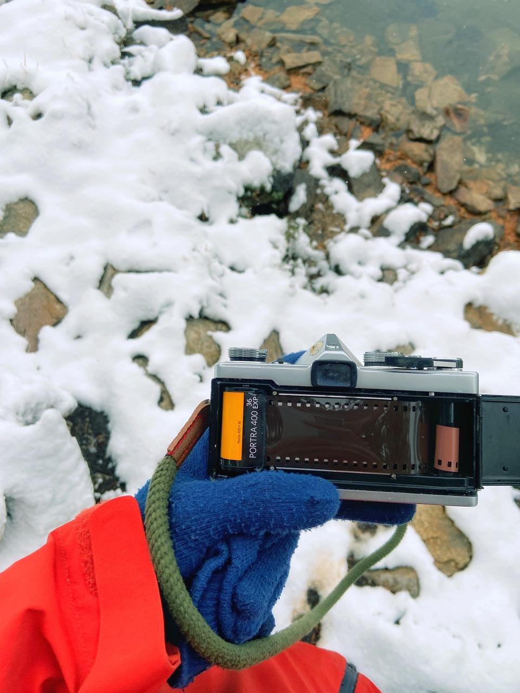
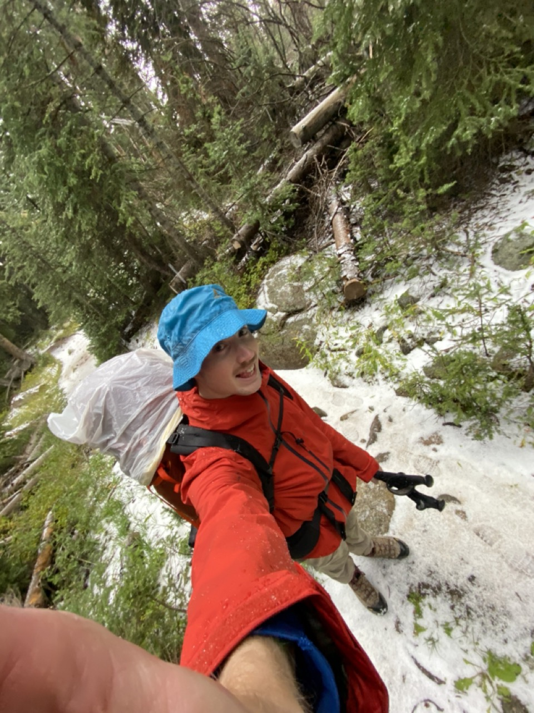

OLYMPUS OM-1: THE REVIEW
AUGUST 14 2024
Well well well. Here we are again on the blog and with me needing to apologize for not writing on it enough. So I'm sorry. I got caught up because I really wanted to do a camera review of the Olympus OM-1 since I introduced it in my last post (this one - post 37), but, doing reviews isn't necessarily fun so I never got around to it... But now i'm buckling down and we're gonna talk about the OM-1 because it's a pretty great camera.

Before I dive into the review itself I'll start by saying I use the OM-1 as my backpacking/hiking camera, so it gets put to the test more so than a lot of my cameras. It's a nice camera all around but it's a cheaper (therefore replaceable) camera so I use it mostly in situations that I don't want to risk my other cameras. So this review might be less of a review/comparison of the OM-1 and more just talking about how the OM-1 does a great job at being the outdoor camera that I use it as.


BUILD
Lets get into the build, this is very important for a camera that I trust to survive whatever weather mother nature has to throw at it. And the OM-1 has survived a lot. Although to be fair I never directly expose it to inclement weather. A lot of the time it is tucked away in my backpack, but still I trust it to be out there with me.

The hands down best part about this camera is that it is small yet it has everything that you would expect from a pro camera. The whole camera almost entirely fits into the lenght of my hand... which is a terrible form of measurement to say that it is a little over 5 inches long.

Another great thing about the OM-1 is that it's all metal, there is some plastic around the lens mount and throughout the rest of the camera body, but it's not a concerning amount of plastic. The camera feels durable and built to last. And I think it's proving itself on the built to last aspect, I mean the OM-1 was introduced in 1972 and mine is still working like a champ!

And something else that I have come to love about the OM-1 is that all of the controls are around the lens barrel. The aperture is at the front of the lens, the shutter speed is at base and of course the focus ring is on the lens. The ISO dial is on the top of the camera but for the most part you can set it and forget about it.

At first I hated this layout. On ALL of my film cameras the aperture is on the lens and the shutter speed is on top of the camera, that was the normal for me and I didn't like how Olympus did it. I just dealt with it initially because I liked the OM-1 enough but it wasn't until I went horseback riding with the camera that I really appreciated it.

On all of my trips leading up to the pack trip a shutter speed on top of the camera would have been fine because I was hiking and had plenty of time to adjust the camera settings before grabbing a photo. But while riding I usually only had one free hand and not a lot of time so having the shutter speed and aperture on the lens meant that I could adjust both quickly with a few rotational movements. I could also pre focus the lens at the same time and it was a lot quicker. And to continue my praise for the shutter speed on the lens I could tell what shutter speed I was on without looking since there were notches on either side of the shutter selector ring.
I'll talk a lot more about the pack trip and the OM-1 on that trip at some point, but for now I'll just say that it was the first time that the shutter/aperture on the lens really became an apparent benefit for me.

FEATURES
The OM-1 is a pretty cut and dry camera, it's fully mechanical, has a max shutter speed of 1/1000th and does everything that I need it to. It's a no frills camera which is what I love about it; there's not a lot on it that can break!
The most advanced feature on the camera is the light meter I'd say. It's a very simple meter with a needle and an exposure range with a +/- on the top and bottom. It's useful when it works but it's powered by one of those illegal 1.5V mercury batteries that were common in older cameras but hard to find now. I have used an adapter to use the more common Lr44 button batteries, but I've read that the voltage with an adapter can be questionable and it's overall easier to just use my phone or guess. So 80% of the time I don't use my OM-1 with it's built in meter, but it has one, which was probably a pretty high tech feature when the camera was released.

It has also has a mirror lock up lever and self timer which I guess are pretty cool too... but it's not really a camera that I got for it's features, it's a camera that I got because it works well and takes nice photos. And that's all I really needed it for!

IMAGE QUALITY
So lets get into the photos that it takes because they're fantastic!!!
I have the 50mm f1.4 and 28mm f2.8 lenses for my OM-1 and both seem incredibly sharp, render colors beautifully and I am always very impressed with the images that they produce. And then the OM-1 does it's job as being a black box with functioning shutter perfectly! I really have no complaints when it comes to image quality. And often the images that I get back from the OM-1 are some of my favorites in my archive.


I should acknowledge that most of the time that I'm using this camera I'm already in a really pretty or scenic place so that inherently adds to the "wow" factor of the images. But even when I have used the camera around home and for portraits it never fails to deliver.


And if you saw the image caption I did have a 50mm f1.2 lens for the OM system at one point and it was an INSANE lens. Honestly it was too much for me so I sold it, but the sharpness and depth of field was something else.
SOME NOTES/ CONCERNS
I like to include a section like this for personal remarks in my reviews. Usually I include things that I notice while using the camera, particularly things that I don't like about the camera. But I don't really have any concerns to add for the OM-1. I bought this camera to serve a purpose and it does a really good job at it.
For many of my film cameras I bought them because I wanted them, but with the OM-1 I bought it because I needed it.. Well not necessarily needed since I already had the F3, but I was looking for something specific and the OM-1 was that camera. I wanted a camera that was reliable, durable, replaceable and that took good enough photos. I didn't care for much else when looking for a backpacking/hiking camera and truthfully a lot of cameras could have done the job, but the OM-1 was the one I ended up with and I have been perfectly happy with it. So, since it does everything I need it to do I don't nit pick and look for any issues with it. It works and that's all I need from it!
...... If I was looking for issues one would be that it doesn't have a built in hot shoe... but I'm not looking for issues, and I never need the flash with the OM-1 so... I'm not looking for issues.

THE END OF THE REVIEW
I've said it a number of times already but to formally end the review I'll say it again. The OM-1 is a great camera that takes great pictures and fits my needs perfectly. I was looking for a reliable, durable and relatively small camera that I could take backpacking, and the OM-1 fit the bill and so far I have been really happy with it.
It's a really impressive pro level camera in a small body and the most important thing for me is that it is not terribly expensive. On eBay you can find them without a lens for around or under the $100 mark and they always seem available so for a camera that I take into snowstorms and dusty trails it's a huge relief knowing that I can get a replacement. And it doesn't feel like I am settling to use the OM-1 out of fear that I'd break my F3, I'm always really happy with the results and I wouldn't even think about using a different camera when I'm gearing up for a backpacking trip!